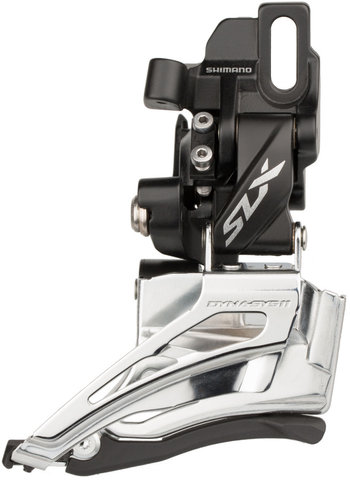

The front derailleur is the mechanism that shifts the chain on bike with more than one front chainring. There are many different makes and models, but they all share the same basic design and functionality. Front derailleurs are attached to the bike with either a clamp or bracket. Clamp mounted derailleur.